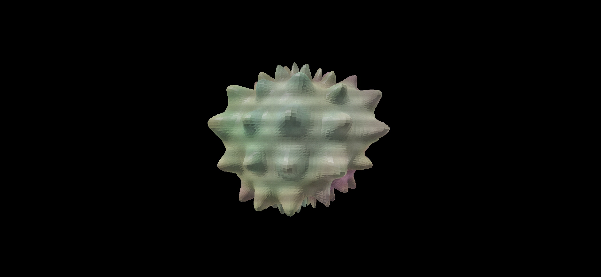

EDITORIAL / MYTHIC / RITUAL / ALIEN
Realtime procedural art systems
built for screen + gallery.
OLU builds living loops and instruments — minimal interface, maximum presence.

Works
Selected realtime pieces and instruments.
About
Short statement. No fluff.
Statement
I make realtime systems that behave like relics: procedural objects, slow rituals, controlled chaos. The work sits between instrument and artifact.
Practice
- Realtime / procedural visuals
- Seamless loops for screen + installation
- Tools and instruments
Tech: WebGL / Unity / shaders / generative pipelines.
Contact
Commissions, shows, collabs.
Links